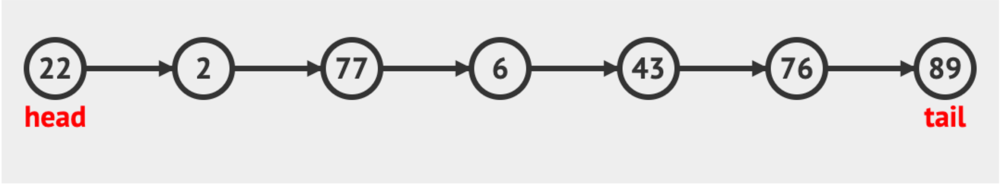
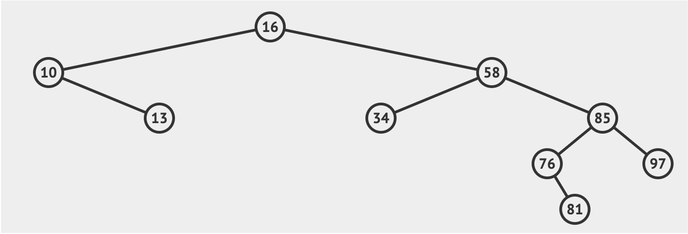
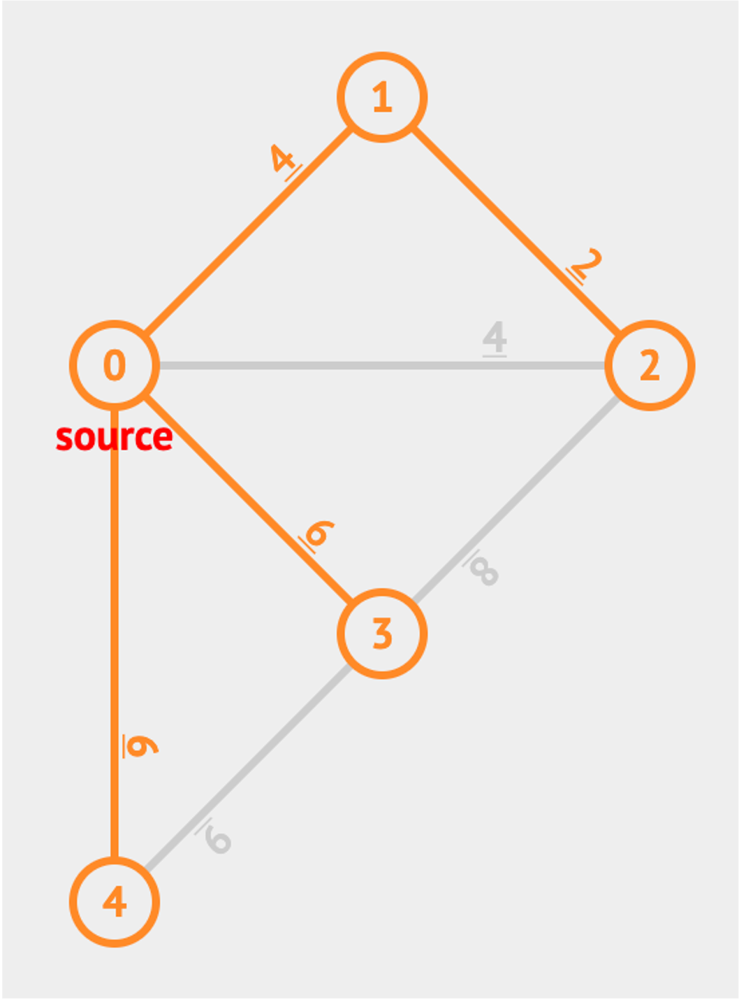
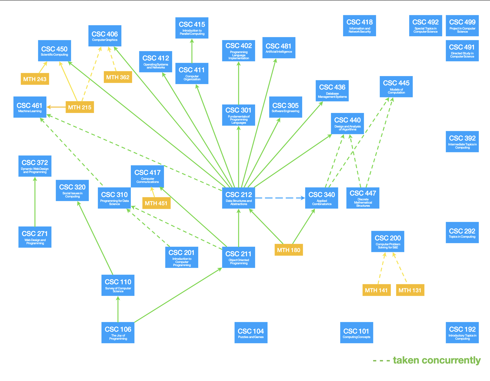
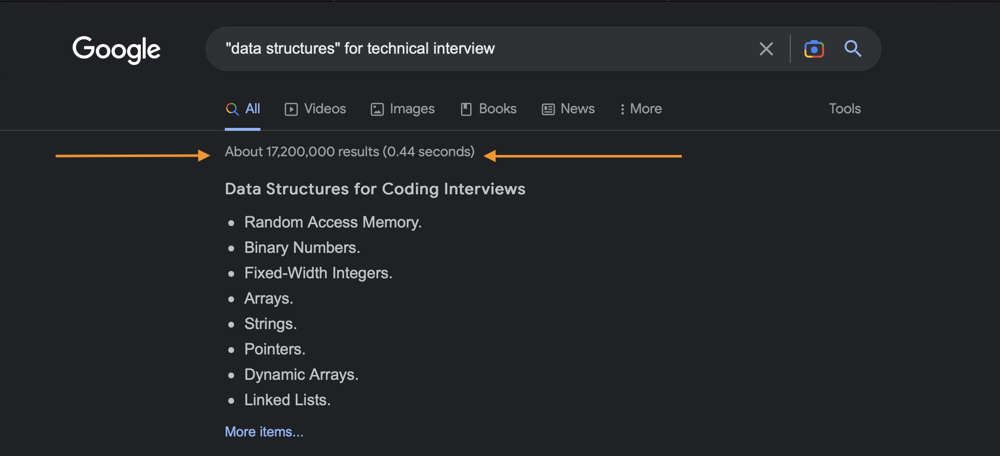

Overview#
TL;DR

Data structures and algorithms are fundamental concepts in computer science that deal with the organization and manipulation of data.
A data structure is a way of storing and organizing data in a computer program so that it can be accessed and used efficiently. Some common data structures include arrays, linked lists, stacks, queues, trees, and graphs.
An algorithm is a set of instructions or procedures that a computer follows to solve a problem or perform a task. Algorithms are used to manipulate data in various ways, such as searching for specific information, sorting data, or performing mathematical operations.
Together, data structures and algorithms are essential tools for designing efficient and effective computer programs. By understanding how to choose the right data structure and algorithm for a specific task, developers can optimize the performance of their programs and improve their ability to handle large amounts of data.
CSC 212#
Review of basic principles of analysis of algorithm
Introduction to fundamental data structures and their algorithms arrays, lists, stacks, queues, trees, hash tables,graphs
Survey of classic algorithms for sorting and searching
Prerequisites: CSC 211 (at least C-) and MTH 180
Familiar Structures#

ARRAY

MATRIX
New Structures#

Linked List

Binary Tree

Graph

Hash Table
Making Connections#

CSC 212 is at the center of the image for a reason: passing this course is the ‘key to the kingdom’… It’s the last of the foundational courses and opens up the rest of the field. Hence why a firm grasp of this material is essential to be successful later…academically and career path…
Importance?#

This many hits denotes two things:
There is an impossible amount of information out there on the subject
When results fall in the ballpark of 20 million results, it’s safe to safe it may be a topic worth understanding well…
Recommended Textbooks#


C++ / Programming Refresher??#


CLion#

Labs & Assignments#
- Labs #
Discussion and collaboration are allowed and encouraged. However, you must write your own code and/or comment each collaborators contribution.
- Assignments #
Discussions and collaboration are allowed, however you must write your own code and solutions. This is non-negotiable.
- All labs and assignments are to be turned in on time via Gradescope #
Late submissions are NOT accepted
Submissions via means other than Gradescope are NOT accepted- Plagiarism? #
Just don’t do it
If you get caught (chances are very high), your name(s) will be immediately reported for further sanctions
Setting Expectations#
- Attend Lectures & Labs#
You get out what you put in…
- Organize your time#
Schedule your time accordingly… Use a calendar/planner
- Participate / Think Critically#
Lectures are discussion-based and conceptual, ask questions!!
Labs are practical: try, fail, try again… if fail, ask questions!!
Office hours: there are five TAs and one instructor on staff hired to help you succeed. Take advantage!!- Start early!!#
Time is your biggest enemy in this course, plan accordingly!!
Need Help??#
Get Help!!#
Data Structures & Algorithms courses tend to have a lower success rate than many of their counterparts. This is the nature of the subject matter being difficult to grasp.
Traditionally, these courses have about a 3:1 fail rate, meaning nearly 33% of students who enroll fail the course.
Fig. 14 if it isn’t one of them…#
No submission
No project